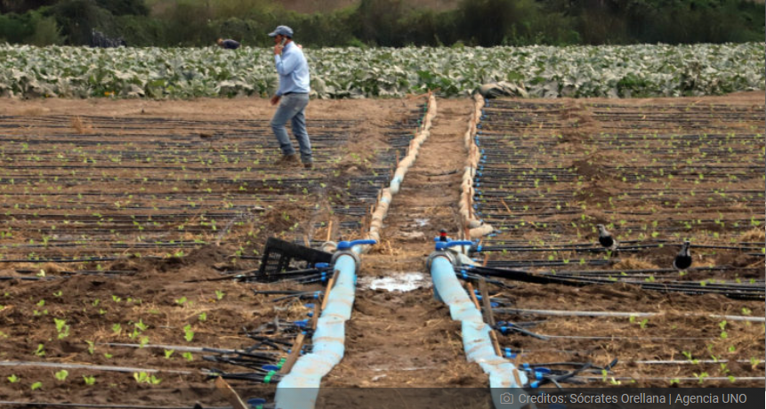

Gobierno decreta emergencia agrícola por escasez hídrica en
Coquimbo, Valparaíso, O'Higgins y Maule
Noticias

Pasado el mediodía de este jueves, el Ministerio de Agricultura confirmó que se determinó decretar emergencia agrícola por escasez hídrica en Coquimbo, Valparaíso, O’Higgins y Maule.
Con la decisión, estas regiones se suman a Los Lagos, que vive en este estado desde abril. Así, 146 comunas de Chile estarán bajo esta condición en todo el territorio.
Desde el Gobierno también anunciaron un fondo de emergencia para la sequía por un total de $8 mil millones.
Ese monto se complementará con recursos de los Gobiernos Regionales y con otras medidas que Agricultura y Obras Públicas analizan en conjunto.
Déficit al rojo
De la mano de la emergencia climática y el cambio en los patrones de lluvia y acumulación de nieve, casi todo el país registra déficit de precipitaciones.
Según cifras divulgadas por Agricultura, a julio de este año, de Atacama a Maule falta entre 62% y 80% de agua caída si se compara con el promedio histórico de 1981 a 2010.
“A este panorama se le suma las alzas de temperatura, baja acumulación de nieves y menor recarga de acuíferos y caudales que convierten”, destacaron.
Dineros para paliar crisis
Para 2021, el Instituto de Desarrollo Agropecuario (Indap) cuenta con el presupuesto de riego más grande de la historia de la pequeña agricultura en Chile.
En línea con datos oficiales, este fondo alcanza un total de $32.652.085.000, el que estará enfocado en dar seguridad de riego y aumentar la eficiencia en el uso del agua a cerca de 11 mil usuarios.
Entre 2010 y 2020, más del 99% del monto de financiamiento de la Comisión Nacional de Riego (CNR), en colaboración con Indap, ha buscado apoyar a pequeños agricultores y pequeñas empresas agrícolas.
Con eso, por ejemplo, se tecnificaron cerca de 42 mil hectáreas en 14 de las 16 regiones del país en el periodo de 2018 a 2020.
Para 2021, la CNR ha dispuesto $135.593 millones en distintas líneas de acción, que van en directo apoyo a agricultores y sus organizaciones y mitigar los efectos de la sequía.
Se trata de un alza al doble del presupuesto en dos años, aseguraron desde el Gobierno.
VIDEO: Ministra @meryundurraga anuncia declaración de emergencia agrícola por déficit hídrico en 4 regiones de Chile
Volver al inicio
Atras